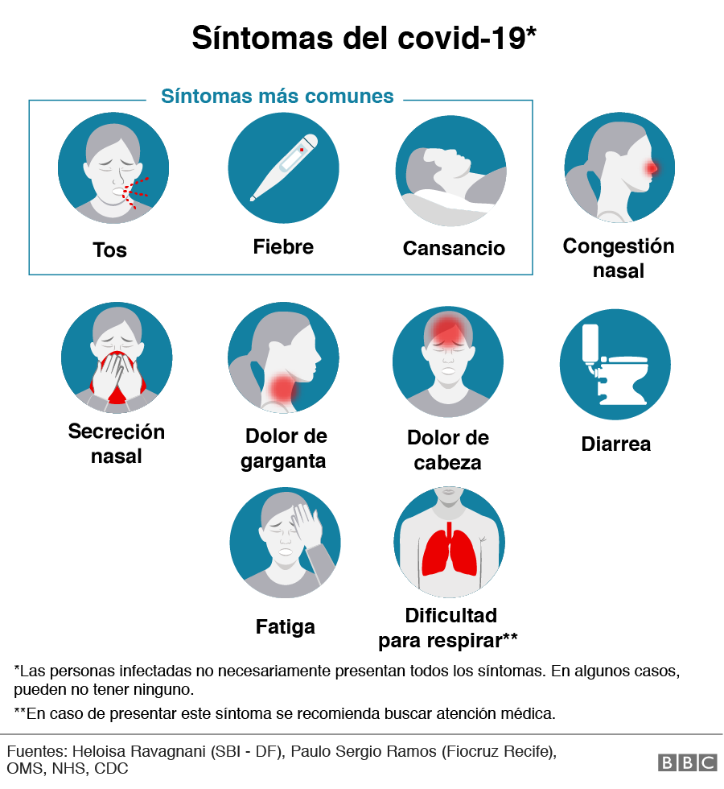
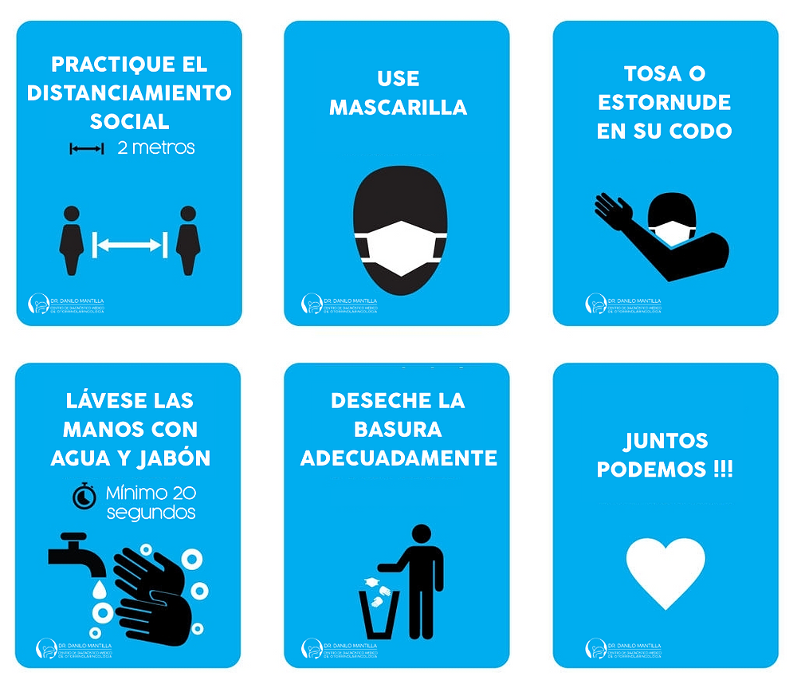
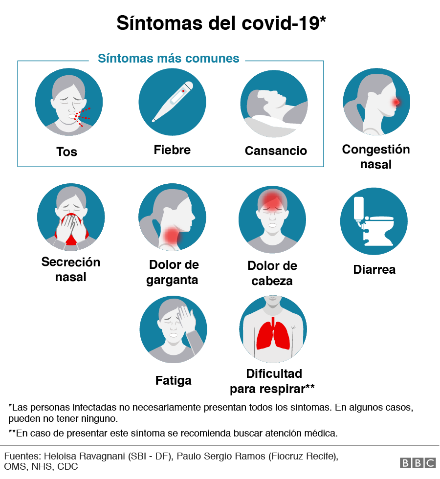
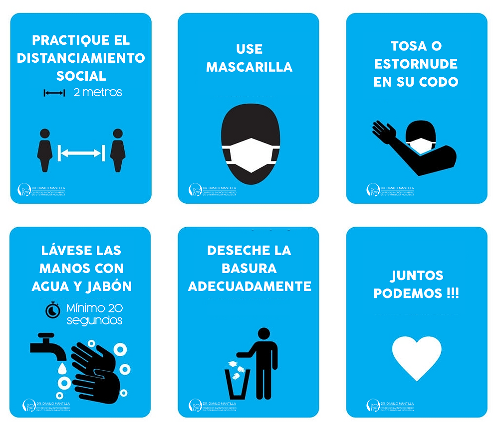

COMO PREVENIRLO

1Utilizar Tapabocas
Los Tapabocas pueden ayudar a prevenir que las personas que las llevan propaguen el virus y lo contagien a otras personas. Sin embargo, no protegen frente a la COVID-19 por sí solas, sino que deben combinarse con el distanciamiento físico y la higiene de manos. Sigue las recomendaciones de los organismos de salud pública de tu zona
2Lavarse las manos
Lávate las manos con frecuencia. Usa agua y jabón o un desinfectante de manos a base de alcohol.
3Mantener una distancia segura
Mantén una distancia de seguridad con personas que tosan o estornuden. Para poner en práctica el distanciamiento físico o social, manténgase a una distancia de al menos 6 pies (la longitud aproximada de 2 brazos extendidos) de las demás personas que no son miembros de su hogar, tanto en espacios interiores como al aire libre.
GALERIA
 


